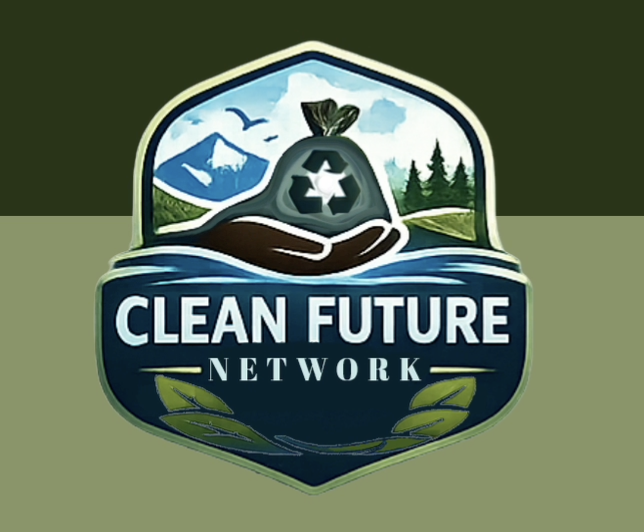
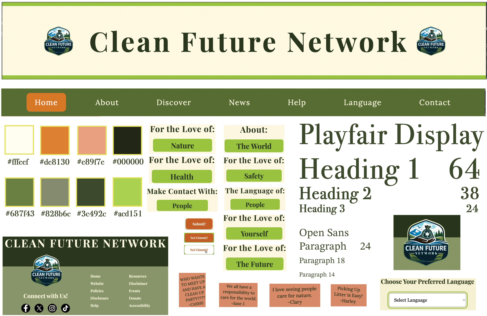
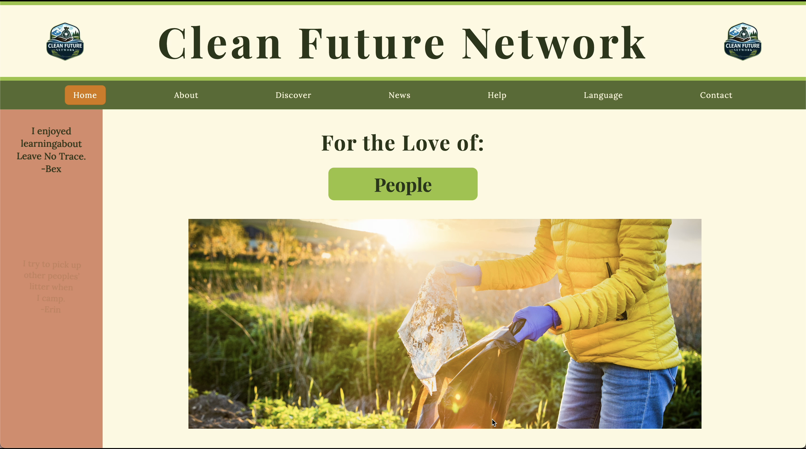
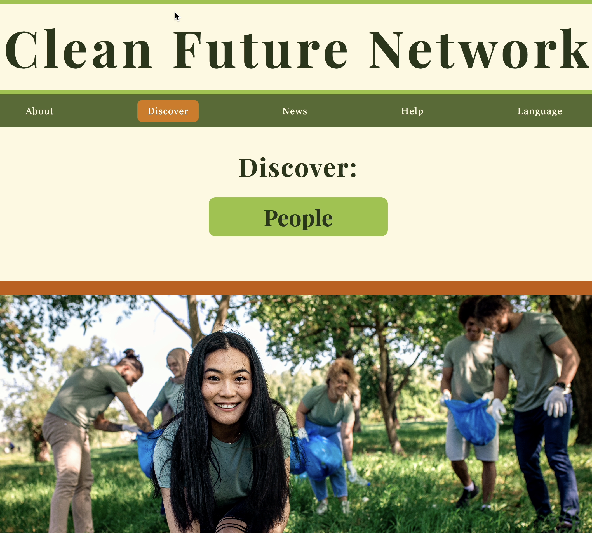
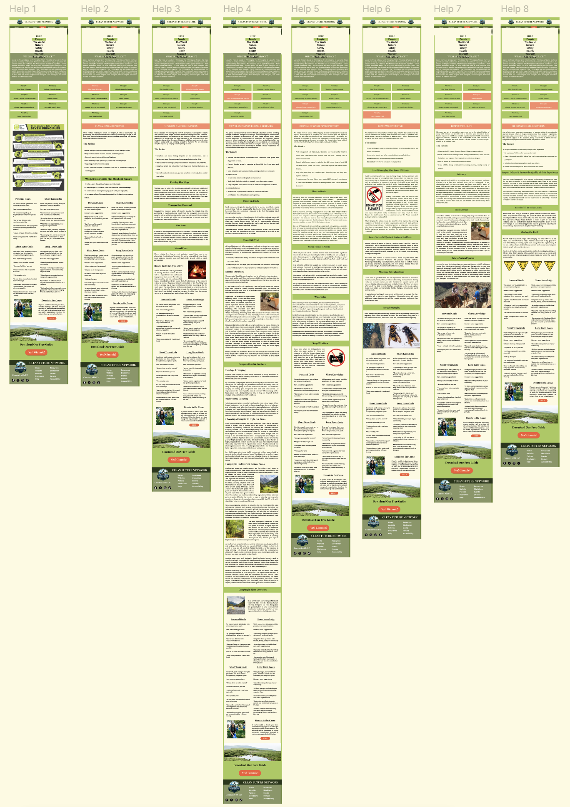
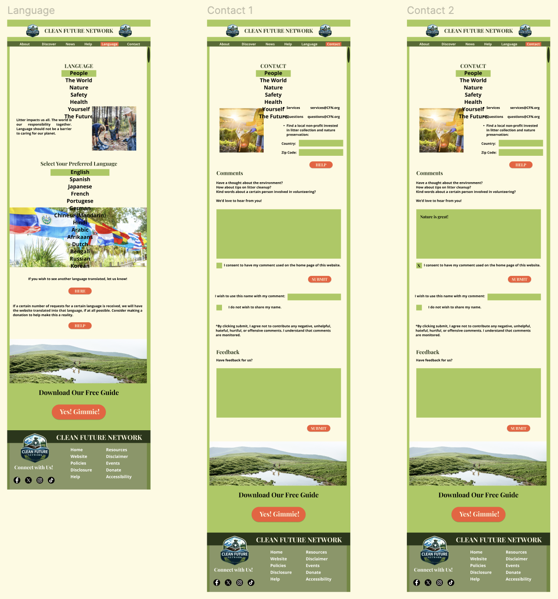
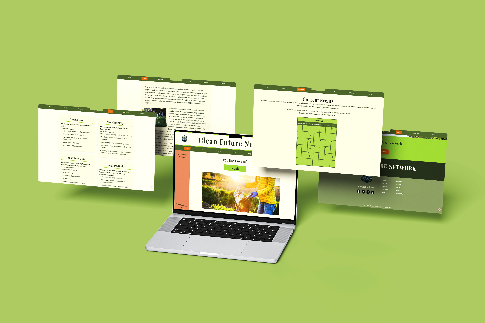

TOOLS
Figma
Adobe Photoshop
Adobe Dreamweaver
MY ROLE
Brand Designer
UX/UI Designer
Web Designer
Independent Project
DELIVERABLES
Brand Identity
Logo Design
Information Architecture
Website UI
Interactive Prototype
ASSETS & CREDITS
Envato Elements
Licensed assets and mockups
PROJECT OVERVIEW
A unified digital platform designed to turn environmental awareness into meaningful action.
Clean Future Network is a conceptual nonprofit brand and website designed to connect environmental education, sustainability resources, and community involvement through one cohesive digital experience.
The goal was to create a welcoming, informative platform that helps visitors explore environmental topics and discover practical ways to get involved.

Clean Future Network logo and visual identity.
THE PROBLEM & DESIGN GOALS
Environmental information is most useful when people can find it, understand it, and act on it.
Environmental organizations communicate across many content types, including educational resources, current news, events, and community initiatives. The challenge was to bring these resources together in one intuitive experience without overwhelming visitors.
- Organize information: Establish a clear structure for educational content, news, events, and community resources.
- Simplify discovery: Make important information easier to scan and navigate.
- Encourage action: Connect visitors with practical ways to participate in environmental initiatives.
- Support inclusion: Explore multilingual access for a broader audience.
PROCESS
Early planning established the site's structure before the visual system was developed.
Research explored environmental education and community-focused websites, including organizations such as Leave No Trace. I planned a content structure that brings together educational resources, news, local cleanup events, and community involvement.
Initial sketches helped establish the page hierarchy and navigation. These plans informed the subsequent visual design and high-fidelity website concept.

Initial storyboard and page planning.
UX APPROACH
The information architecture and page layouts were designed to help visitors move from learning about environmental issues to finding ways to get involved.
- Information Architecture: Organized the experience around key destinations, including Discover, Help, News, Contact, and Language.
- Content Hierarchy: Used headings, informational cards, supporting imagery, and structured page sections to make content easier to scan.
- Reusable Page Structures: Applied consistent layouts across educational content to create familiar patterns as visitors explored different topics.
- Navigation: Designed consistent pathways between the site's main sections to support exploration.
- Accessibility Considerations: Included a language-selection concept to explore multilingual access.
- Community Engagement: Incorporated community messages and action-oriented content to connect environmental awareness with opportunities for participation.

Core elements of the visual design system.
VISUAL IDENTITY & DESIGN SYSTEM
A natural visual identity balances environmental themes with a clear, modern digital experience.
The visual direction combines natural imagery, greens, creams, and warm accent colors to reinforce sustainability while creating a welcoming, community-focused identity. Typography and photography help establish hierarchy and guide visitors through the content.
Consistent page layouts, informational cards, and navigation connect the different areas of the website. Together, these elements create a cohesive design system for environmental education and community engagement.

Clean Future Network homepage design.
THE WEBSITE EXPERIENCE
The final designs bring the brand identity and content structure together in a cohesive multi-page experience.
The website concept includes educational resources, environmental news, community initiatives, and contact information. Repeated visual patterns help connect the pages while allowing each section to serve a distinct purpose.
The high-fidelity screens were developed into an interactive Figma prototype to demonstrate the intended navigation and page experience.
EXPLORE THE INTERACTIVE PROTOTYPE
View Interactive PrototypeExplore the high-fidelity prototype to see the page layouts, navigation, and connected website experience.
SELECTED SCREENS

Discover page and educational content structure.

Help page and reusable educational layout.

Language selection and Contact page designs.

Multi-page website presentation.
Your mission deserves a visual identity that connects.
CONTACT ME